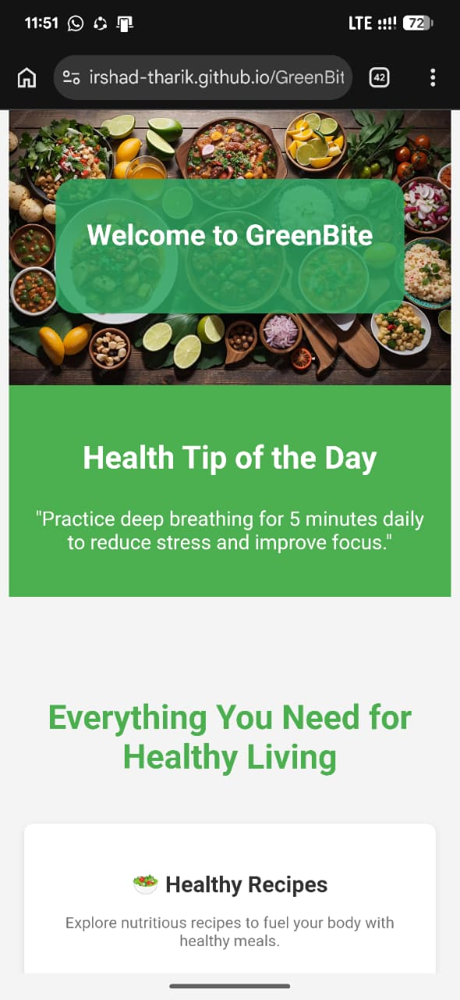
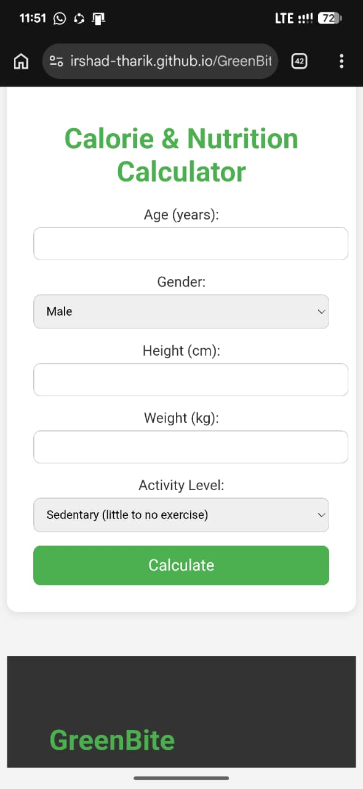
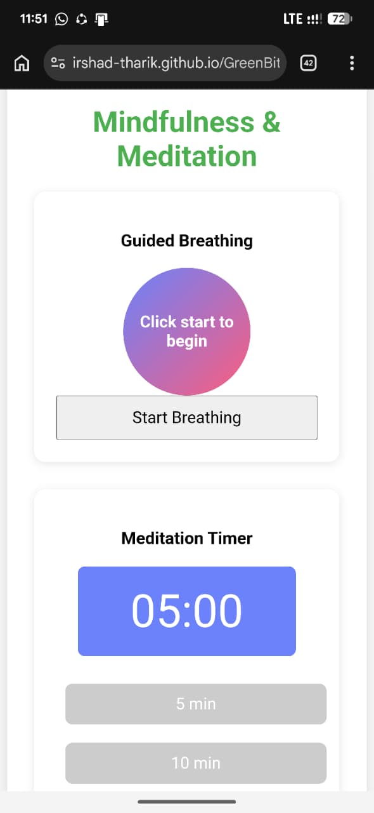
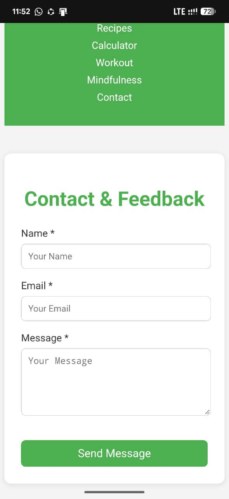

Healthy recipes
Discover nutritious meals with recipe information, ingredients, preparation instructions and available nutrition details.
WEB DEVELOPMENT · HEALTH & WELLNESS
A Health & Wellness Website
NutriCo is a health and wellness website I created during my first year at university as my first web development project. Branded as GreenBite, it brings healthy recipes, nutrition tools, workout planning and mindfulness activities together in one website.
01 / Demonstration
Explore the GreenBite website and its health, nutrition, fitness and mindfulness features.
02 / Screenshots




03 / Overview
The idea behind NutriCo
NutriCo brings everyday wellness information and interactive tools together in one place. The website combines healthy recipe information, nutrition calculations, workout planning and mindfulness activities. Building it as my first website helped me turn my early web development knowledge into a complete user experience.
04 / Features
Discover nutritious meals with recipe information, ingredients, preparation instructions and available nutrition details.
Calculate estimated energy requirements and nutrition targets using user-provided body measurements and activity information.
Explore workout-related tools designed to support physical activity and fitness planning.
Access mindfulness activities and wellness content designed to encourage relaxation and everyday wellbeing.
Find the website's contact area for communication and feedback.
05 / Technologies
06 / Learning
As my first website project during my first year at university, NutriCo gave me practical experience in structuring web pages, styling interfaces with CSS and adding interactivity with JavaScript. It also helped me understand how multiple sections can work together as one consistent website.
07 / Information